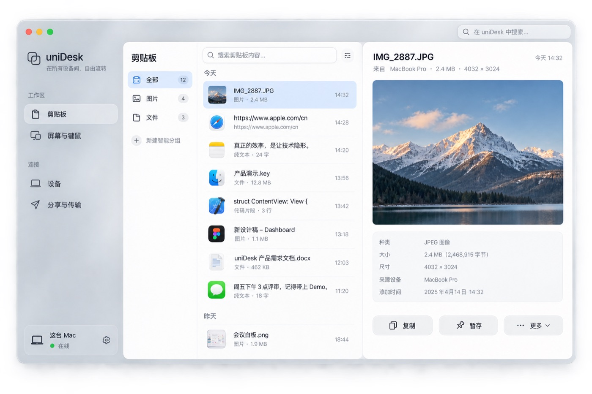

剪贴板同步
文本、图片与原生格式在可信设备间实时同步。在 Mac 上复制，到另一台设备直接粘贴 —— 不依赖 iCloud，局域网内即时抵达。
uniDesk 是 macOS 优先的原生桌面协作工具 —— 剪贴板同步、文件传输、暂存抽屉、键鼠共享， 由 Rust 引擎与 SwiftUI 打造，经 QUIC 加密，只在你的可信设备之间运行。
macOS 14+ · Apple Silicon · Developer ID 签名与公证 · QUIC 加密传输

能做什么
文本、图片与原生格式在可信设备间实时同步。在 Mac 上复制，到另一台设备直接粘贴 —— 不依赖 iCloud，局域网内即时抵达。
跨设备同步的剪贴板历史，支持图片内容搜索。昨天复制过的截图，今天搜得到。
按需传输，小文件可提前送达；完整保留名称与文件夹结构，历史缓存有容量上限与清理回执。
把文件拖进 240 × 240 的悬浮抽屉暂存，整批拖出到 Finder，或直接发送给另一台设备。
一套键鼠跨屏控制多台设备：真实显示器布局、独立开关、权限状态可见，紧急收回一键生效。不再受同一 Apple 账号限制。
自动发现局域网设备，也可手动输入 IPv4 定位；配对仍需对端确认，IP 不作为信任依据。
传输基于 QUIC 加密，设备身份持久可信。日志只记录元数据、状态与哈希 —— 永不记录剪贴板正文。
界面
剪贴板历史：文本、图片、文件一目了然，支持图片内容搜索
对比
| 功能 | macOS 连续互通 | Deskflow | uniDesk |
|---|---|---|---|
| 键鼠跨屏 | 仅限同 Apple 账号 | 屏幕位置无法自由摆放 | ✅ |
| 剪贴板同步 | 依赖 iCloud，稳定性不佳 | 仅基础文字、小图片 | ✅ |
| 文件传输 | AirDrop | ❌ | ✅ 支持文件夹 |
| 文件暂存抽屉 | ❌ | ❌ | ✅ |
| 剪贴板历史 | ❌ | ❌ | ✅ 跨设备，图片可搜 |
| 加密传输 | ✅ | TLS | QUIC |
对比依据 2026-09：Apple 通用控制 / 通用剪贴板支持文档、Deskflow 官方仓库。
安装
macOS 14+ · Apple Silicon，一条命令装好，随 brew 更新。
brew trust --cask godd6366/unidesk/unidesk
brew tap godd6366/unidesk \
https://github.com/GodD6366/unidesk-release
brew install --cask godd6366/unidesk/unidesk升级：brew update && brew upgrade --cask unidesk
从 GitHub Releases 下载并校验，拖入 Applications 即可。
shasum -a 256 -c SHA256SUMS 校验完整性公开预发行经 Developer ID 签名并公证，可直接打开。